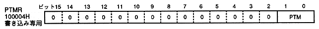
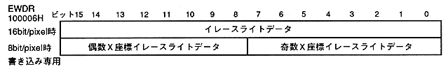

PTM | Drawing mode | |
bit 1 | 0 | |
0 | 0 | Idle by switching frames |
0 | 1 | Draws when 01B is written Start |
1 | 0 | Automatic drawing with frame switching Start |
1 | 1 | Setting prohibited (do not set) ) |
